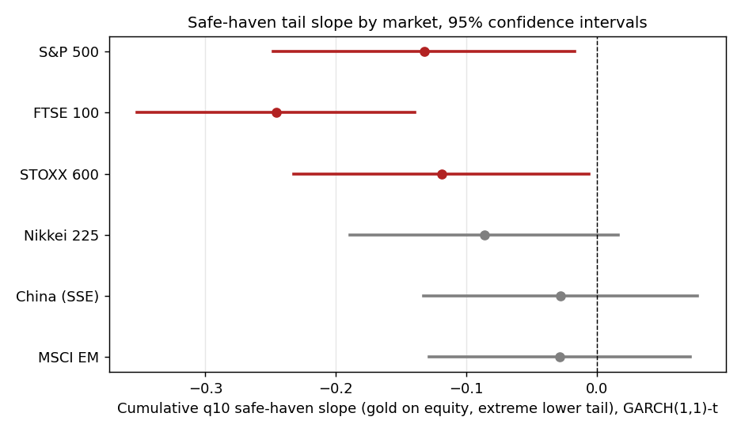
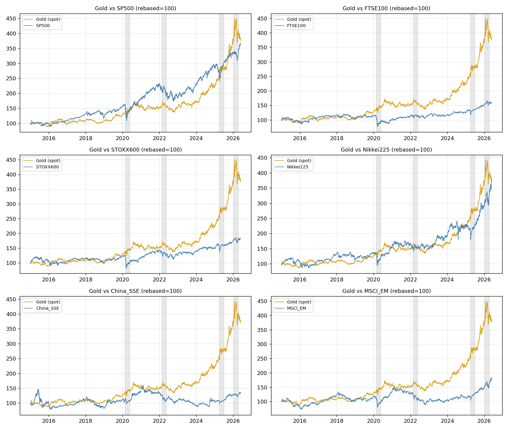
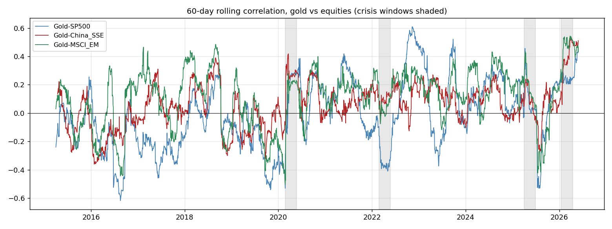

关于我About
格拉斯哥大学国际金融学硕士在读,本科金融学专业通过中央财经大学与北京第二外国语学院双向联合培养项目完成(均分 84.18,专业前 6%)。五段实习横跨私募基金财务审计、地产咨询、绿色金融研究与证券公司,让我对机构客户的尽调逻辑与资产配置诉求有第一手观察;日常习惯用 Python、Wind、Excel 把这些信息转化为可执行的分析结论。硕士论文聚焦黄金避险属性的 DCC-GARCH 实证研究,量化建模是我的另一条主线。 MFin candidate at the University of Glasgow, with a B.Econ in Finance completed through a Beijing municipal bidirectional joint-training programme between the Central University of Finance and Economics and Beijing International Studies University (84.18/100, top 6% of class). Five internships across private-fund audit, real-estate consultancy, green-finance research and securities brokerage have given me a first-hand view of institutional due-diligence and asset-allocation needs — which I turn into decisions using Python, Wind and Excel. My dissertation on gold's safe-haven property via DCC-GARCH modelling is the other thread: quantitative research.
教育背景Education
- 亚当·斯密商学院,QS 世界排名前 100,英文授课;核心课程:金融计量、投资组合管理、资产定价,Distinction 成绩 Adam Smith Business School; QS Top 100. Core modules: Financial Econometrics, Portfolio Management, Asset Pricing — Distinction average
- 硕士论文:《黄金的避险属性——基于 DCC-GARCH 模型的实证研究》,使用 Python 完成数据处理与计量建模 Dissertation: "The Safe-Haven Property of Gold: Evidence from DCC-GARCH Models" — data work and econometric modelling in Python
- 前三年于中央财经大学完成专业核心课程(获中央财经大学结业证):均分 84.18/100,班级排名前 6%;获学业一等奖学金及德育、美育、社会实践专项奖学金 Completed core finance coursework at CUFE for the first three years (CUFE completion certificate): average score 84.18/100, top 6% of class; First-Class Academic Scholarship plus merit scholarships in ethics, aesthetics and social practice
- 核心课程:金融计量学、公司金融、投资银行学、商业银行管理、证券投资学 Core modules: Financial Econometrics, Corporate Finance, Investment Banking, Commercial Bank Management, Securities Investment
- 第四年于北京第二外国语学院完成学位要求:集中备考雅思(取得 6.5 分)、完成本科毕业论文 Completed degree requirements at BISU in the final year: IELTS preparation (6.5) and the undergraduate dissertation
实习经历Experience
- 为19 家关联公司编制 2022–2023 年收发存毛利率分析(数据透视表);完成48 家公司往来账款对账单/台账/ERP 三方交叉核对(逐笔量化已开票/未开票余额差异并标注成因)、6 家公司应付账款到货统计核对,应用XLOOKUP批量匹配费用、供应商与支付凭证数据 Prepared 2022–2023 gross-margin analyses (pivot tables) for 19 affiliated companies; reconciled receivables/payables for 48 companies via three-way statement/ledger/ERP cross-checks (every variance quantified and annotated), plus goods-receipt data for 6 companies, using XLOOKUP to batch-match fees, suppliers and payment vouchers
- 使用Wind 金融终端开展个股 K 线技术分析(涨跌幅、成交量、换手率、MA5–MA250 等指标),辅助财务尽调工作 Used the Wind financial terminal for stock-level technical analysis (price change, volume, turnover, MA5–MA250) to support financial due diligence
- 调研50+ 头部 IDC 供应商行情,以 Excel 汇总价格、签约率、上架率等核心数据,覆盖全国 24 个省市级一线市场(市场化租赁存量约 290 万机柜、未来供应约 133 万机柜),制作100+ 页 PPT完成项目汇报 Researched 50+ leading IDC suppliers across 24 provincial-level markets (~2.9m existing / ~1.33m pipeline racks); consolidated pricing, contract and utilisation data in Excel and delivered a 100+ page deck for project reporting
- 梳理 2018–2023 年国内 IDC 大宗并购交易36 笔(万国数据、光环新网等头部收购方),总结单机柜收购价格集中于20–25 万元/机柜等市场定价规律 Compiled 36 domestic IDC M&A transactions (2018–2023) (GDS, 21Vianet and other leading acquirers); identified pricing trends, incl. per-rack prices clustering at RMB 200–250k
- 参与北京亮马河区域建筑改造可行性研究:对标蓝色港湾、三里屯太古里等标杆项目,从市场分析、项目定位、经营方案到财务测算输出可行性报告,测算结论为运营5年后以公募REITs退出的收益率优于自持运营方案 Contributed to the Liangma River area renovation feasibility study (Beijing): benchmarked against Solana and Sanlitun Taikoo Li; market analysis, positioning and financial modelling concluded that a public-REITs exit after 5 years of operation would outperform the self-operating scenario
- 跟进招投标全流程并定期统计投标结果数据,为业务部门销售决策提供量化支持;对接亦庄经开区商务金融局,走访商户推进政策落地 Managed the bidding workflow end-to-end and produced recurring win-rate statistics to support sales decisions; liaised with the Yizhuang EDZ Bureau of Commerce & Finance on policy implementation
- 主导完成诺贝尔慈善基金会案例研究报告及路演 PPT:剖析基金会"532"资产配置策略(股票 50% / 另类资产 30% / 固收 20%)与百年运营模式演进(资产从 3100 万瑞典克朗增至 49 亿、增值 158 倍),提炼3条可复制的资产配置治理经验(核心回报目标、细分配置规则、业绩比较基准) Led the case report and presentation deck on the Nobel Charity Foundation, analysing its "532" asset-allocation strategy (~50% equities / 30% alternatives / 20% fixed income) and the century-long evolution (assets SEK 31m → SEK 4.9bn, 158×); distilled 3 transferable governance lessons (core return target, granular allocation rules, performance benchmark)
- 牵头9+ 项慈善与绿色金融专题研究(法规汇编、机构慈善数据、博物馆治理体系等),对接跨组同事及指导老师完成阶段性交付;每周汇编行业大事记与监管政策文件 Drove 9+ research workstreams spanning charity and green-finance topics (regulatory compilations, institutional philanthropy data, museum governance); delivered to cross-team colleagues and faculty advisors; maintained weekly digests of industry events and regulatory documents
- 基于《追寻价值之路》复盘 A 股 1990–2020 行情,制作80+ 页 PPT,在分公司晨会先后 10 余次主讲大盘波动分析 Reviewed 30 years of China's A-share market (1990–2020) and presented an 80+ page market analysis across 10+ branch morning briefings
- 完成300+ 客户电话回访并形成跟进反馈;参与分公司客户经理、投顾岗简历初筛;开立模拟账户完成期权组合交易实操 Completed 300+ client follow-up calls with documented feedback; screened CVs for client-manager and investment-adviser roles; executed simulated option-combination trades via a demo account
- 参与月度/季度三大报表编制与增值税、企业所得税申报;参与公司赴美上市财务审核校对及文件汇编 Assisted with monthly/quarterly financial statements and VAT & CIT filings; supported financial review and document compilation for the company's US listing
学术研究Academic Projects
- 黄金平均而言对多数发达市场股票具备对冲作用:六个市场中五个的关系为负且统计显著(GARCH(1,1)设定下) Gold hedges most developed equity markets on average — the relationship is negative and statistically significant in five of six markets under the GARCH(1,1) specification
- 在极端下跌区间,黄金对标普500、富时100、STOXX 600仍具统计显著的避险效应(以富时100最强),但对中国、新兴市场指数不成立;这一保护作用能抵消发达市场尾部单日损失的十分之一到四分之一 In extreme downturns the safe-haven effect holds for the S&P 500, FTSE 100 and STOXX 600 (strongest for the FTSE 100), offsetting a tenth to a quarter of a developed-market tail-day loss — but is absent for China and broader emerging markets
- 覆盖新冠疫情、俄乌战争、2025–26关税冲击四场性质迥异的压力事件,黄金的极端避险反应在统计上保持稳定,未发现随危机类型显著变化的证据——挑战了"避险效应因危机而异"的主流叙事 Across four episodes of markedly different character — COVID-19, the Russia–Ukraine war, and the 2025–26 tariff shocks — gold's tail-risk response shows no statistically significant instability, challenging the "crisis-dependent" narrative in prior literature



- 带领小组完成 A 股数据采集、清洗与计量检验,评估CAPM 适用性并基于实证结果提出改进建议,完成报告与课堂展示 Led data collection, cleaning and econometric testing on A-share data; assessed CAPM applicability and proposed refinements based on the empirical results
- 基于同花顺数据梳理蒙牛业务结构与十年 PE 融资演进,重点分析对赌协议设计、投资人结构与资本运作路径 Mapped Mengniu's corporate structure and decade-long PE financing path using Tonghuashun data, focusing on the VAM agreement design and investor structure
校园与荣誉Campus & Honours
- "京信杯"模拟炒股大赛:3403 名参赛者中位列第 74 名(前 2.2%),区间收益率 16.20% "Jingxin Cup" simulated stock-trading competition: ranked 74th of 3,403 contestants (top 2.2%) with a 16.20% period return
- 第十七届"挑战杯"大学生创业计划竞赛团队优胜奖;校三好学生、优秀班干部 Outstanding Team Prize, 17th "Challenge Cup" Student Entrepreneurship Competition; Merit Student; Outstanding Student Cadre
- 金融学院新闻宣传中心干事(学院公众号运营);志愿服务 100+ 小时(第二十届中国金融学年会志愿者) Officer, News & Publicity Centre, School of Finance (WeChat account operations); 100+ volunteer hours incl. the 20th China Finance Annual Conference
技能与其他Skills & Additional
语言:普通话(母语);英语流利(雅思 6.5;已通过大学英语四级、六级 CET-4 / CET-6;全英文硕士授课)。共青团员;爱好:围棋(业余五段)、篮球 Languages: Mandarin (native); English — fluent (IELTS 6.5; CET-4 & CET-6 passed; master's degree taught fully in English). Interests: Go (amateur 5-dan), basketball